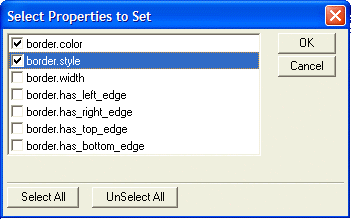

Set Border Style of Object(s)
Overview
The Set Border Style of Object(s) action sets the border attributes of one or more objects.
Procedure
Select the window that contains the value data. There are two options:
"Current Form or Browse Window"
"Another Form or Browse Window"
If you selected "Another Form or Browse Window", select an open form or browse in the Window Name list.
Click
 to display a list of objects on the window that have one
or more of the border properties. Select an object and click OK
to add it to the list. Click
to display a list of objects on the window that have one
or more of the border properties. Select an object and click OK
to add it to the list. Click  to remove the currently selected
item on the list.
to remove the currently selected
item on the list.For each object in the second list, click
to display a list of border properties.
Select one or more properties and click OK to
add it to the list. Click to remove the currently selected
property on the list. These properties are displayed in the picture below.

For each object in the second list, specify how you will specify the border property. There are three options:
"Specify the value now"
"Specify a variable that contains the value"
"Specify an expression that evaluates to the value"
If you selected "Specify the value now", enter the text value in the Value field.
If you selected "Specify a variable that contains the value", select a variable from the Variable list.
If you selected "Specify an expression that evaluates to the value", enter an expression in the Expression field.
Click Next >.
Optionally modify the comment that describes the action.
Click Finish.
See Also
Set Text Property of Object(s), Set Value Property of Object(s), Set Fill Style of Object(s)